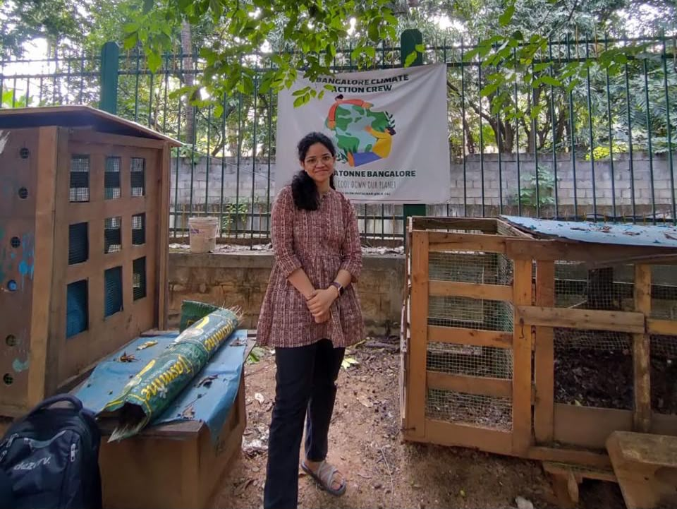
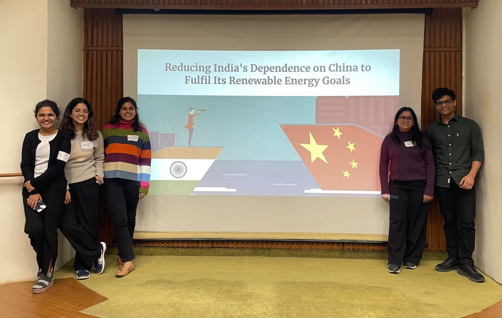
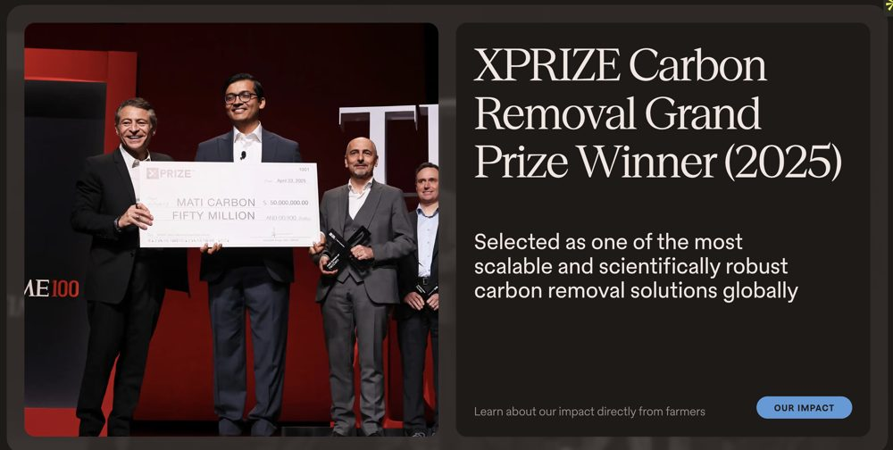
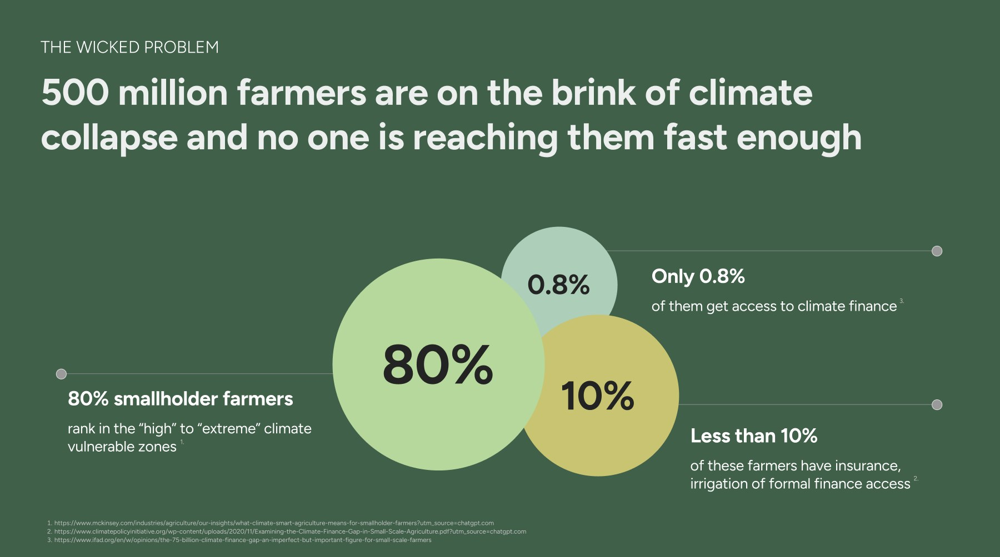
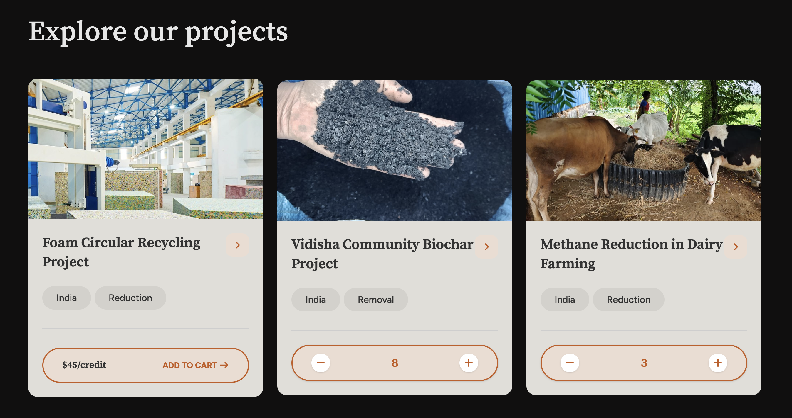

<title>Aparna's Story</title>
<meta name="claude:viewport-fit-sides" content="cover">
<style>
  /* Editorial storybook: centered single column, hand-drawn SVG accents, generous white space */

  :root {
    --bg: #FFFFFF;
    --fg: #0A0A0A;
    --muted: #6B6B6B;
    --rule: #E6E6E6;
    --ink: #0A0A0A;
    --accent: #0A0A0A;
    --display: "Fraunces", "EB Garamond", Georgia, serif;
    --body: "Inter", system-ui, -apple-system, Helvetica, Arial, sans-serif;
    --hand: "Caveat", "Patrick Hand", "Shadows Into Light", cursive;
  }

  @media (prefers-color-scheme: dark) {
    :root:not([data-theme="light"]) {
      --bg: #FFFFFF;
      --fg: #0A0A0A;
      --muted: #6B6B6B;
      --rule: #E6E6E6;
      --ink: #0A0A0A;
      color-scheme: light;
    }
  }
  :root[data-theme="dark"] {
    --bg: #FFFFFF;
    --fg: #0A0A0A;
    --muted: #6B6B6B;
    --rule: #E6E6E6;
    --ink: #0A0A0A;
    color-scheme: light;
  }

  * { box-sizing: border-box; }

  body {
    margin: 0;
    background: var(--bg);
    color: var(--fg);
    font-family: var(--body);
    font-size: 17px;
    line-height: 1.65;
    -webkit-font-smoothing: antialiased;
    padding-left: max(16px, env(safe-area-inset-left, 0px));
    padding-right: max(16px, env(safe-area-inset-right, 0px));
  }

  .page {
    max-width: 620px;
    margin: 0 auto;
    padding-block: clamp(56px, 10vw, 96px) clamp(56px, 10vw, 96px);
  }

  .meta {
    font-family: var(--body);
    font-size: 12px;
    letter-spacing: 0.14em;
    text-transform: uppercase;
    color: var(--muted);
    display: flex;
    justify-content: space-between;
    gap: 16px;
    flex-wrap: wrap;
    margin-bottom: 72px;
  }

  h1 {
    font-family: var(--display);
    font-weight: 300;
    font-style: italic;
    font-size: clamp(44px, 8vw, 72px);
    line-height: 1.02;
    letter-spacing: -0.02em;
    margin: 0 0 20px;
    text-wrap: balance;
  }

  h1 em {
    font-style: normal;
    font-weight: 500;
  }

  .lede {
    font-family: var(--display);
    font-weight: 400;
    font-size: clamp(19px, 2.4vw, 22px);
    line-height: 1.45;
    color: var(--fg);
    margin: 0 0 56px;
    max-width: 52ch;
    text-wrap: pretty;
  }

  .signature {
    font-family: var(--hand);
    font-size: 28px;
    color: var(--ink);
    margin: 0 0 80px;
    line-height: 1;
  }

  .chapter {
    margin: 0 0 72px;
  }

  .chapter:last-of-type { margin-bottom: 56px; }

  .sketch {
    display: block;
    margin: 0 0 20px;
    color: var(--ink);
  }

  .sketch svg { display: block; }

  .eyebrow {
    font-family: var(--body);
    font-size: 11px;
    letter-spacing: 0.22em;
    text-transform: uppercase;
    color: var(--muted);
    margin: 0 0 10px;
  }

  h2 {
    font-family: var(--display);
    font-weight: 400;
    font-style: italic;
    font-size: clamp(26px, 3.4vw, 32px);
    line-height: 1.15;
    letter-spacing: -0.01em;
    margin: 0 0 14px;
    text-wrap: balance;
  }

  p {
    margin: 0 0 14px;
    max-width: 58ch;
  }

  p:last-child { margin-bottom: 0; }

  .divider {
    border: none;
    border-top: 1px solid var(--rule);
    margin: 72px 0;
    width: 60px;
  }

  .closing {
    margin-top: 40px;
  }

  .closing h2 {
    font-size: clamp(30px, 4vw, 40px);
    font-style: italic;
    font-weight: 300;
    margin-bottom: 20px;
  }

  .contact {
    margin-top: 48px;
    font-family: var(--body);
    font-size: 14px;
    color: var(--muted);
    display: flex;
    flex-wrap: wrap;
    gap: 24px;
  }

  .contact a {
    color: var(--ink);
    text-decoration: none;
    border-bottom: 1px solid var(--ink);
    padding-bottom: 2px;
  }

  .footer {
    margin-top: 96px;
    font-family: var(--body);
    font-size: 11px;
    letter-spacing: 0.2em;
    text-transform: uppercase;
    color: var(--muted);
    display: flex;
    justify-content: space-between;
    gap: 16px;
    flex-wrap: wrap;
    border-top: 1px solid var(--rule);
    padding-top: 20px;
  }

  @media (max-width: 480px) {
    .page { padding-block: 48px 48px; }
    .chapter { margin-bottom: 56px; }
  }

  @media (prefers-reduced-motion: no-preference) {
    .chapter, .closing, .lede, .signature {
      animation: rise 0.9s ease-out both;
    }
    .chapter:nth-of-type(1) { animation-delay: 0.05s; }
    .chapter:nth-of-type(2) { animation-delay: 0.1s; }
    @keyframes rise {
      from { opacity: 0; transform: translateY(8px); }
      to { opacity: 1; transform: none; }
    }
  }

  .case-link {
    display: inline-block;
    margin-top: 10px;
    font-family: var(--body);
    font-size: 14px;
    color: var(--ink);
    text-decoration: none;
    border-bottom: 1px solid var(--ink);
    padding-bottom: 2px;
  }

  .photo {
    margin: 24px 0 0;
    padding: 10px;
    border: 1px solid var(--rule);
    background: #FAFAFA;
  }
  .photo img {
    display: block;
    width: 100%;
    height: auto;
  }
  .photo figcaption {
    font-family: var(--body);
    font-size: 12px;
    color: var(--muted);
    margin-top: 10px;
    letter-spacing: 0.02em;
    line-height: 1.5;
  }

  /* Hand-drawn roughen filter — applied once, referenced from each sketch */
  .rough { filter: url(#roughen); }
</style>

<link rel="preconnect" href="https://fonts.googleapis.com">
<link rel="preconnect" href="https://fonts.gstatic.com" crossorigin>
<link rel="stylesheet" href="https://fonts.googleapis.com/css2?family=Fraunces:ital,opsz,wght@0,9..144,300;0,9..144,400;0,9..144,500;1,9..144,300;1,9..144,400&family=Inter:wght@400;500&family=Caveat:wght@400;500&display=swap">

<!-- Global roughen filter for all sketches -->
<svg width="0" height="0" style="position:absolute" aria-hidden="true">
  <defs>
    <filter id="roughen">
      <feTurbulence type="fractalNoise" baseFrequency="0.02" numOctaves="2" seed="4"/>
      <feDisplacementMap in="SourceGraphic" scale="1.6"/>
    </filter>
  </defs>
</svg>

<main class="page">
  <div class="meta">
    <span>Aparna Rawat</span>
    <span>A short note · Nov 2026</span>
  </div>

  <h1>A short story about <em>how I got here</em> and why I'd like to work with <span style="font-family: var(--body); font-style: normal; font-weight: 500; letter-spacing: -0.01em;"><span style="color:#4285F4">G</span><span style="color:#EA4335">o</span><span style="color:#FBBC04">o</span><span style="color:#4285F4">g</span><span style="color:#34A853">l</span><span style="color:#EA4335">e</span></span>.</h1>

  <p class="lede">I'm a builder who happens to have started in product design. Climate is where I've chosen to spend the next decade.</p>

  <!-- CH 1: OYO & Dezerv -->
  <section class="chapter">
    <div class="sketch" aria-hidden="true">
      <svg width="88" height="60" viewBox="0 0 88 60" fill="none" stroke="currentColor" stroke-width="1.4" stroke-linecap="round" stroke-linejoin="round" class="rough">
        <!-- Phone / call sketch -->
        <rect x="8" y="10" width="34" height="46" rx="4"/>
        <line x1="14" y1="18" x2="36" y2="18"/>
        <circle cx="25" cy="46" r="2"/>
        <!-- Call waves -->
        <path d="M50 20 Q58 24 50 28"/>
        <path d="M56 14 Q70 24 56 34"/>
        <path d="M62 8 Q82 24 62 40"/>
      </svg>
    </div>
    <p class="eyebrow">Dezerv · 2022–2024</p>
    <h2>90%+ of lapsed investors, back.</h2>
    <p>At Dezerv, a wealth-tech startup, I was a product designer who spent as much time talking to people as designing for them.</p>
    <p>One brief: a list of HNI investors who had walked away. Find out why they didn't choose Dezerv.</p>
    <p>I got on the phone with them, one by one, and listened to their reasons for saying no. Those insights went straight into product. And just by talking to them, I brought 90%+ of them back myself. User research turned into sales.</p>
    <p>That curiosity about why people do what they do ran through all two years: 500+ research calls with HNI investors.</p>
  </section>

  <!-- CH 2: Coconuts -->
  <section class="chapter">
    <div class="sketch" aria-hidden="true">
      <svg width="88" height="64" viewBox="0 0 88 64" fill="none" stroke="currentColor" stroke-width="1.4" stroke-linecap="round" stroke-linejoin="round" class="rough">
        <!-- Coconut shells stacked -->
        <path d="M14 48 Q24 36 36 48"/>
        <path d="M18 48 Q24 42 30 48"/>
        <path d="M36 48 Q46 34 58 48"/>
        <path d="M40 48 Q46 40 52 48"/>
        <path d="M58 48 Q68 38 78 48"/>
        <path d="M62 48 Q68 42 74 48"/>
        <!-- Ground line -->
        <path d="M8 52 L82 52"/>
        <!-- Small leaf sprout -->
        <path d="M45 48 Q44 40 42 36"/>
        <path d="M42 36 Q38 32 36 34"/>
        <path d="M42 36 Q46 32 48 34"/>
      </svg>
    </div>
    <p class="eyebrow">All along · The thread</p>
    <h2>Climate was never a pivot.</h2>
    <p>I was already in it. Fridays for Future. Robin Hood Army. Then the Gigatonne Challenge, where we diverted around 18,000 kg of coconut shells from landfill into composting and mulching.</p>
    <p>Coconut vendors were paying garbage collectors around ₹1,000 a week to haul their shells away, and those shells ended up in landfills, rotting into emissions. We went vendor to vendor across Bangalore with a better offer: stop paying, give the shells to us. We stopped those emissions and turned the shells into compost. Some days we hand-picked and stored them ourselves. Hard, on-the-ground work, one conversation at a time.</p>
    <figure class="photo">
      
      <figcaption>On the ground: Bangalore Climate Action Crew, Gigatonne Challenge composting site.</figcaption>
    </figure>
  </section>

  <!-- CH 3: Climate policy -->
  <section class="chapter">
    <div class="sketch" aria-hidden="true">
      <svg width="88" height="68" viewBox="0 0 88 68" fill="none" stroke="currentColor" stroke-width="1.4" stroke-linecap="round" stroke-linejoin="round" class="rough">
        <!-- Wind turbine -->
        <line x1="44" y1="22" x2="44" y2="60"/>
        <path d="M44 22 L30 10"/>
        <path d="M44 22 L58 10"/>
        <path d="M44 22 L44 6"/>
        <circle cx="44" cy="22" r="2"/>
        <!-- Ground -->
        <path d="M14 60 L74 60"/>
        <!-- Small sun -->
        <circle cx="72" cy="14" r="5"/>
        <line x1="72" y1="5" x2="72" y2="7"/>
        <line x1="81" y1="14" x2="83" y2="14"/>
        <line x1="78" y1="8" x2="80" y2="6"/>
      </svg>
    </div>
    <p class="eyebrow">On purpose</p>
    <h2>Policy, by choice.</h2>
    <p>I joined the YLAC Climate Policy Project and created a detailed policy brief on "Reducing India's Dependence on China to Fulfil its Renewable Energy Goals" for Ms. Priyanka Chaturvedi, Member of Parliament, Rajya Sabha.</p>
    <p>Our brief was selected among the top five and presented to the larger cohort during the concluding weekend.</p>
    <p>Policy showed me, from first principles, how decisions get made for millions of people at once. But I wanted impact I could see right away, so I moved to startups, where the work hits the ground directly.</p>
    <figure class="photo">
      
      <figcaption>Policy: presenting the India renewable energy brief with my cohort.</figcaption>
    </figure>
  </section>

  <!-- CH 4: Mati Carbon -->
  <section class="chapter">
    <div class="sketch" aria-hidden="true">
      <svg width="84" height="64" viewBox="0 0 84 64" fill="none" stroke="currentColor" stroke-width="1.4" stroke-linecap="round" stroke-linejoin="round" class="rough">
        <!-- Leaf -->
        <path d="M22 50 Q30 20 60 16"/>
        <path d="M22 50 Q50 46 60 16"/>
        <!-- Vein -->
        <path d="M24 48 Q40 34 58 18"/>
        <!-- Stem -->
        <path d="M22 50 L18 58"/>
      </svg>
    </div>
    <p class="eyebrow">Mati Carbon · 2025</p>
    <h2>Mati Carbon, right after the XPRIZE.</h2>
    <p>Mati Carbon won the Musk Foundation's $50M XPRIZE Carbon Removal. Out of 20,000 applications, then 1,300 competing teams, Mati took the grand prize.</p>
    <figure class="photo" style="max-width:480px;margin:1.2rem 0">
      
      <figcaption>The Mati Carbon team on stage at the XPRIZE Carbon Removal grand prize ceremony.</figcaption>
    </figure>
    <p>Right after, I got the opportunity to join as the only Creative Associate. The first urgency was the buyer deck: after the XPRIZE win Mati had the name and the deck needed to match. I redesigned it.</p>
    <figure class="photo">
      
      <figcaption>One slide from the buyer deck I redesigned at Mati Carbon.</figcaption>
    </figure>
    <p>Alongside that, I worked with <a href="https://ot.studio/" target="_blank" rel="noopener" style="color:var(--ink);border-bottom:1px solid var(--ink);text-decoration:none;padding-bottom:1px">OT Studio</a>, one of the best design agencies in the climate space, on the whole rebranding of Mati Carbon: the main website, the visual identity, all of it.</p>
    <p>Then came everything else: LinkedIn posts, farmer brochures in every language, farmer manuals, New York Climate Week invites.</p>
    <p>Working at Mati, I kept noticing other real Indian project developers who deserved the same visibility but weren't getting any version of the platform Mati had. I started building AbsorbX on the side, then left Mati to go all in.</p>
  </section>

  <!-- CH 5: AbsorbX -->
  <section class="chapter">
    <div class="sketch" aria-hidden="true">
      <svg width="104" height="72" viewBox="0 0 104 72" fill="none" stroke="currentColor" stroke-width="1.4" stroke-linecap="round" stroke-linejoin="round" class="rough">
        <!-- Two small marketplaces, side by side -->
        <rect x="8" y="18" width="34" height="30" rx="2"/>
        <path d="M8 26 L42 26"/>
        <circle cx="14" cy="22" r="1"/>
        <circle cx="18" cy="22" r="1"/>
        <!-- grid cells -->
        <line x1="8" y1="36" x2="42" y2="36"/>
        <line x1="25" y1="26" x2="25" y2="48"/>
        <!-- second marketplace with soil -->
        <rect x="56" y="18" width="34" height="30" rx="2"/>
        <path d="M56 26 L90 26"/>
        <circle cx="62" cy="22" r="1"/>
        <circle cx="66" cy="22" r="1"/>
        <!-- biochar sprinkle -->
        <circle cx="64" cy="34" r="0.8" fill="currentColor"/>
        <circle cx="70" cy="40" r="0.8" fill="currentColor"/>
        <circle cx="76" cy="36" r="0.8" fill="currentColor"/>
        <circle cx="82" cy="42" r="0.8" fill="currentColor"/>
        <circle cx="68" cy="44" r="0.8" fill="currentColor"/>
        <!-- Sprout -->
        <path d="M72 48 Q72 40 70 36"/>
        <path d="M72 48 Q72 42 76 40"/>
        <!-- Bridge arrow -->
        <path d="M42 33 L56 33"/>
        <path d="M54 31 L56 33 L54 35"/>
      </svg>
    </div>
    <p class="eyebrow">2025–present</p>
    <h2>Now, AbsorbX.</h2>
    <p>Buyers, policy, on-ground work: AbsorbX is where I'm putting all three together.</p>
    <p>As the founder, I've done everything: legal, onboarding suppliers, business development, design, figuring out how to build a company from scratch.</p>
    <p>I'm building two marketplaces side by side: one for carbon credits from Indian project developers who were getting left out of foreign marketplaces and one for physical biochar.</p>
    <p>So far I've onboarded several carbon projects onto the platform, brought PwC on as a partner and started biochar field trials with agriculture partners who are putting it into their soil.</p>
    <p>Incubated at IIM Kozhikode LIVE and part of She Innovates at Plaksha University. Ranked top 8% at WTFund C1/25 and won Best Startup Pitch at Jaipur Startup Connect 2026 with IDFC FIRST Bank.</p>
    <figure class="photo">
      
      <figcaption>The AbsorbX marketplace: design and climate brought together in one product. Live Indian projects, listable and buyable like any other item on a shelf.</figcaption>
    </figure>
  </section>

  <hr class="divider">

  <!-- Closing -->
  <section class="closing">
    <p class="eyebrow">Why this role</p>
    <h2>The buyer side of the story.</h2>
    <p>Building AbsorbX, I've seen one side clearly: Indian suppliers and project developers who can't get onto worldwide marketplaces. The buyer side has stayed a black box for me: how a company like Google thinks about sustainability at this scale, from carbon to water.</p>
    <p>That's what I want to learn and an operations role is the right way in. I like being close to the actual work rather than a step removed from it. It's the same instinct that took me from user calls at Dezerv to compost sites in Bangalore to biochar fields in India today.</p>
    <p>Asia-Pacific is where I most want to work. Developing countries need serious climate strategy more than anywhere else and India is the region I know on the ground. Clean power is where my YLAC work sat. Water I've been learning through Garvita Gulhati (Water Girl of India), one of our early AbsorbX advisors, whose work on it has shaped how I think about the problem. It's a space I've wanted to sit closer to for a while.</p>
    <p>I'm very keen to get my hands dirty and to be in this role. I've never done climate from a distance, and that's how I'd want to do it at Google.</p>

    <div class="contact">
      <a href="mailto:aparnaadsrwt4@gmail.com">aparnaadsrwt4@gmail.com</a>
      <a href="https://drive.google.com/file/d/1CkwTmCA2jpl-VxoiAWjKdG7w2fqaKp93/view?usp=drive_link" target="_blank" rel="noopener">Resume</a>
      <a href="https://absorb-x.com" target="_blank" rel="noopener">absorb-x.com</a>
      <a href="https://absorbx.vercel.app" target="_blank" rel="noopener">G.A.U.R.I. biochar</a>
      <span>+91 97991 09051</span>
    </div>
  </section>

  <div class="footer">
    <span>Thank you for reading</span>
    <span>Aparna Rawat · Gurugram</span>
  </div>
</main>
